Voluntariat
Treballa la terra, aprèn oficis i fes pinya amb la gent de la casa.
Aprendre fent
Cal Niu és un projecte rural i comunitari a Castellar del Riu (Berguedà): una antiga rectoria que tornem a omplir de vida, a poc a poc i amb les mans. El voluntariat és la manera de formar-ne part de debò.
El plantegem com una estada inicial de 5 dies, prorrogable si ve de gust a tothom. La idea és senzilla: s'aprèn fent. A canvi d'unes hores de feina al dia, compartim taula, vida i aprenentatges. No cal experiència prèvia, només ganes i respecte pel lloc i pels altres.

El que et posa la casa
On dormiràs
Encara no tenim espai interior per dormir. Vine autosuficient, amb furgoneta o tenda de campanya, i munta't el teu racó a la finca. Estem en obres i, a poc a poc, condicionem la casa.
El ritme del dia
Com arribar
No hi ha transport públic fins a la casa: cal vehicle propi. Segueix les indicacions cap a Sant Iscle i Santa Victòria de Llinars (Castellar del Riu, Berguedà).
Tot el camí fins a casa està asfaltat. El GPS de vegades enganya i et vol fer entrar per pistes de terra: no les agafis. Si el navegador t'hi envia, torna a la carretera asfaltada i segueix-la fins a la casa.
Bo de saber
Cal Niu és un espai sense carn, sense fum i sense alcohol. Forma part de la identitat del projecte.
Què portar: el necessari per dormir (sac, matalàs…), roba de treball, calçat còmode, roba d'abric (fa fresca al vespre), higiene personal i moltes ganes.
A l'arribada signaràs un document de consentiment i assumpció de responsabilitat sobre tu mateix durant l'estada. És una formalitat senzilla.
Com funciona
Conta'ns qui ets, què t'agradaria fer i quines dates tens al cap.
T'ensenyem la casa, et presentem la gent i t'expliquem la feina dels primers dies.
Treballem junts, cuinem junts i deixem el lloc una mica millor que com l'hem trobat.

L'únic que falta ets tu
Espai sense alcohol ni fum, vida compartida i molt per aprendre. Quan ho hagis llegit tot, omple el formulari i parlem.
Vull ser voluntari/a